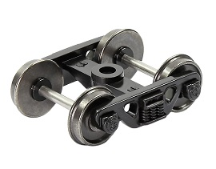

Teknik Bilgiler
Model Tren Ölçekleri
Model trenler, gerçek trenlerin küçük ölçekli modelleridir.
Model trenlerin boyutları, gerçek trenlerin boyutlarına göre belirlenir.
Model trenlerin ölçekleri, milimetre cinsinden ifade edilir. Örneğin, 1:87 ölçekli bir model tren, gerçek trenin 1/87'si kadar büyüktür.
Model trenler, farklı ölçeklerde üretilir. En yaygın model tren ölçekleri şunlardır:
- 1:87 (H0)
- 1:160 (N)
- 1:220 (Z)
- 1:120 (TT)
- 1:148 (O)
- 1:20 (G)
Model tren ölçekleri, model trenlerin boyutları, güç kaynakları, raylar ve aksesuarlar gibi birçok şeyi belirler.
Örneğin, 1:87 ölçekli bir model tren, 1:160 ölçekli bir model trene göre daha büyüktür.
Bu nedenle, 1:87 ölçekli bir model tren için daha büyük raylar ve aksesuarlar gerekir.
Model trenler, farklı ülkelerde farklı ölçeklerde üretilir.
Örneğin, Amerika Birleşik Devletleri'nde en yaygın model tren ölçeği 1:160'tır.
Avrupa'da ise en yaygın model tren ölçeği 1:87'dir.
Model tren ölçeği seçerken, dikkat edilmesi gereken bazı faktörler vardır.
Bunlar, model trenin kurulacağı alan, model trenin işletilmesi için gereken alan, model trenin maliyeti ve model trenin bulunabilirliği gibi faktörlerdir.
Model Tren Markaları ve Üreticileri
Dünyada birçok model tren markası ve üreticisi bulunmaktadır. En popüler model tren markaları arasında şunlar yer almaktadır:
Bu markaların her biri, farklı ölçeklerde ve farklı özelliklerde model trenler üretmektedir.
Model tren seçerken, dikkat edilmesi gereken bazı faktörler vardır.
Bunlar, model trenin kurulacağı alan, model trenin işletilmesi için gereken alan, model trenin maliyeti ve model trenin bulunabilirliği gibi faktörlerdir.
Boji Nedir?
Boji, demiryolu taşıtlarının tekerleklerinin raylar üzerinde hareketini sağlayan sistemdir. Boji, vagonların ve lokomotiflerin temel bileşenlerinden biridir.

Bojiler, aşağıdaki gibi çeşitli parçalardan oluşur:
- Aks: Tekerlekleri taşıyan ve birbirine bağlayan parçadır.
- Tekerlek: Raylar üzerinde hareketi sağlayan parçadır.
- Yay: Bojinin titreşimlerini emen parçadır.
- Amortisör: Bojinin şokunu emen parçadır.
- Bağlantı parçaları: Bojinin vagonlara veya lokomotiflere bağlanmasını sağlayan parçalardır.
Bojilerin seçimi, vagonun veya lokomotifin taşıma kapasitesine ve hızına göre yapılır. Aşağıdaki gibi çeşitli türlerde bulunur:
- Tek dingilli bojiler: Tek dingilden oluşan bojilerdir. Genellikle hafif yük taşıtlarında kullanılır.
- Çift dingilli bojiler: İki dingilden oluşan bojilerdir. Genellikle orta yük taşıtlarında kullanılır.
- Dört dingilli bojiler: Dört dingilden oluşan bojilerdir. Genellikle ağır yük taşıtlarında kullanılır.
{kind=link}
{kind=link}